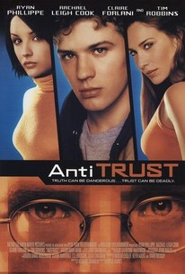
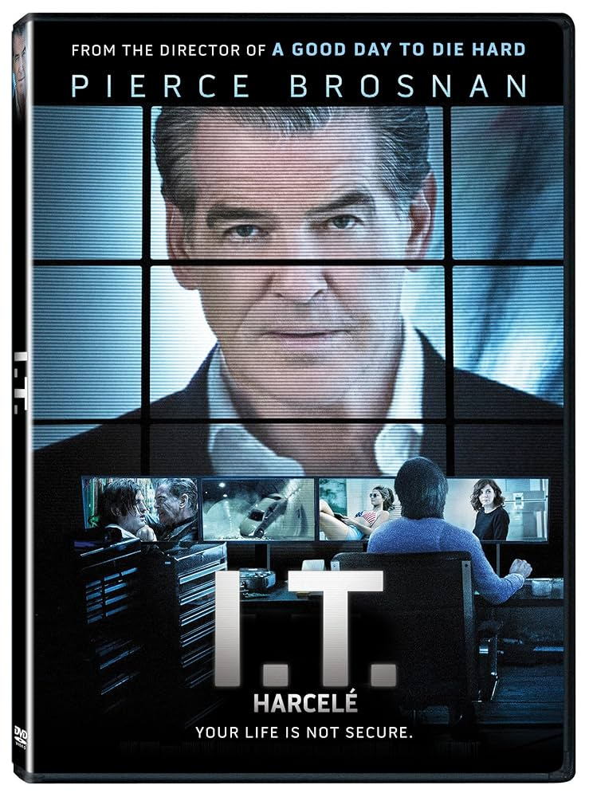

The Social Network (2010)
Overview
Zuckerberg's meteoric rise building Facebook weaves betrayal and genius. Sorkin's sharp script crackles, though some call its dramatization exaggerated and cold.
Tech pioneers, digital culture, industry innovations, and high-stakes tech dramas that explore the impact of computing on our world.
Stories of computer pioneers and tech visionaries whose revolutionary ideas transformed our digital world.
Zuckerberg's meteoric rise building Facebook weaves betrayal and genius. Sorkin's sharp script crackles, though some call its dramatization exaggerated and cold.

Three pivotal Apple launches frame Jobs' brilliance and flaws. Fassbender's electric turn shines, but stagey structure and relentless dialogue alienate some.

A documentary probes Jobs' legacy, from innovation to ruthless ambition. Insightful archival footage informs, but biased lens and lack of focus dilute its byte.
Chronicles of the computer world's rise and the unsung heroes who shaped the digital landscape.

Compaq's underdog battle against IBM in the PC wars sparks nostalgia. Engaging storytelling captivates, but limited scope and dry delivery boot some viewers.

The open-source movement's rise, led by Linux pioneers, gets a geeky spotlight. Informative for techies, but dated visuals and niche focus crash for casual audiences.

A documentary dives into Linux's creation and open-source ethos. Passionate interviews intrigue, but low production values and repetitive preaching log off mainstream appeal.
Exploring the societal impact and ethical dilemmas of the digital age.

Tech insiders expose social media's addictive, polarizing dark side. Alarming insights hit hard, but dramatized segments and preachy tone buffer its signal.
High-stakes dramas in the world of hacking, corporate espionage, and digital threats.

A coder battles a sinister tech mogul stealing open-source ideas. Timely paranoia entertains, but dated tech and cartoonish villains crash its credibility.

A tech consultant hacks a CEO's life in a digital vendetta. Brosnan's gravitas tries, but generic plotting and absurd tech tropes unplug the suspense.

A gamer's virtual world blurs with reality as code turns deadly. Intriguing indie premise fizzles with low-budget execution and a muddled, unscary script.